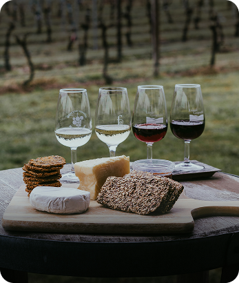

АВТОРСКИЕ ТУРЫ В ГРУЗИЮ
Погрузитесь в захватывающий мир Грузии, исследуя живописные пейзажи, богатую культуру и кухню этой уникальной страны. Присоединяйтесь к нам, чтобы создать свои собственные незабываемые воспоминания — каждый маршрут уникален, как и вы!
ПОПУЛЯРНЫЕ ТУРЫ
ВСЕ ТУРЫ-
ДУША ГРУЗИИ: ЛУЧШЕЕ ЗА 6 ДНЕЙ
Идеальное первое знакомство с Грузией. Тбилиси, Казбеги, Кахетия, древние монастыри, хинкали в горах и вино в Алазанской долине. Путешествие сочетает культуру, природу и гастрономию
-
ВИННЫЕ ДОРОГИ КАХЕТИИ
Посетим уютные семейные винодельни, монастыри Алаверди и Бодбе, пройдемся по улочкам Сигнахи, полюбуемся Алазанской долиной и попробуем настоящий шашлык на виноградных ветках.
-
СВАНЕТИЯ: В КРАЮ БАШЕН И ЛЕДНИКОВ
Экспедиция в самую загадочную часть Грузии – Сванетию. Узнаем легенды средневековых башен, попробуем настоящий кубдари, увидим ледник Шхара и покорим горные тропы.
-
ТАИНСТВЕННАЯ ИМПЕРЕТИЯ
Путешествие в регион древнего Колхидского царства. Каньоны Окаце и Мартвили, сталактитовые пещеры Прометея, монастырь Гелати и вкуснейшая кухня Имеретии.
-

ГАСТРОТУР: ГРУЗИЯ НА ВКУС
Путешествие для гурманов по лучшим ресторанам, винодельням и домашним кухням Грузии. Хачапури по-аджарски, мегрельские сыры, тушетская баранина и легендарный кахетинский шашлык.
-
АДЖАРИЯ: МОРЕ, ГОРЫ И АДЖАПСАНДАЛИ
Микс морского отдыха и горных приключений. Батумский променад, Махунцети с его водопадами и арочным мостом, Зеленый мыс, тропический ботанический сад и фермерские сыроварни.
ЧТО ВКЛЮЧЕНО В ТУР

Проживание
Гостиница в центре Тбилиси (завтраки включены)

Питание
Обеды в экскурсионные дни

Трансфер
В стоимость включено всё транспортное сопровождение

Экскурсионная программа
Экскурсии с гидом (входные билеты включены)
Новые знакомства
Вы познакомитесь не только с новой страной, но и заведёте новых друзей

Яркие впечатления
Дегустации вин и сыра, мастер класс Грузинской кухни и многое другое
ГРУЗИЯ НАШИМИ ГЛАЗАМИ
ФОТОГРАФИИ С ПОЕЗДОК
6 ПРИЧИН ОТПРАВИТЬСЯ С НАМИ - И НЕ ПОЖАЛЕТЬ
Авторские маршруты
Мы создаем уникальные туры, которых нет в стандартных путеводителях
Максимум аутентичности
Показываем настоящую Грузию: колоритные деревни, секретные локации, атмосферные винодельни
Локальные гиды
Вас сопровождают не просто экскурсоводы, а люди, которые живут Грузией и знают ее секреты

Маленькие группы
Комфортное путешествие в компании единомышленников, без толп и суеты
Гибкость маршрутов
подстраиваемся под желания группы, оставляем пространство для спонтанных открытий.
Безопасность и комфорт
Продуманная логистика, проверенные отели и лучшие водители.
ОТЗЫВЫ
АЛЕКСЕЙ
Это было одно из самых впечатляющих путешествий в моей жизни! Сванетия – настоящий край легенд, величественных гор и невероятных людей. Нас принимали как родных, угощали ароматным кубдари и сванской солью, рассказывали истории, которые не прочитаешь в путеводителях. Сванетия – это не просто место на карте, это ощущение свободы, приключений и первозданной красоты. Огромное спасибо команде за организацию – все было четко, комфортно и без суеты. Если хотите увидеть настоящую Грузию – вам сюда!
НАТАЛЬЯ
Я давно мечтала попасть в Кахетию, но даже не представляла, что путешествие окажется таким атмосферным и душевным. Винные дороги Грузии — это не просто дегустации, а целый ритуал, в котором смешаны история, культура и, конечно, невероятное гостеприимство. Мы пробовали вино в старинных марани, гуляли по виноградникам, ужинали в доме винодела.
А еще мы научились готовить настоящие хинкали и хлеб шоти — теперь дома буду устраивать грузинские вечера.Этот тур — идеальный микс вкусной еды, хорошего вина и теплых встреч.
АННА И СЕРГЕЙ
Батуми покорил нас своей атмосферой – колоритный старый город, вечерние прогулки по набережной, вкуснейшие хачапури по-аджарски с видом на закат… Но главные сюрпризы начались, когда мы отправились в горы! Водопад Махунцети – просто волшебство! Еще нас впечатлили фермерские сыроварни – мы узнали, как делают настоящий аджарский сыр, попробовали его с домашним вином и даже привезли с собой пару кусочков. Спасибо за этот тур – влюбились в Аджарию и обязательно вернемся!